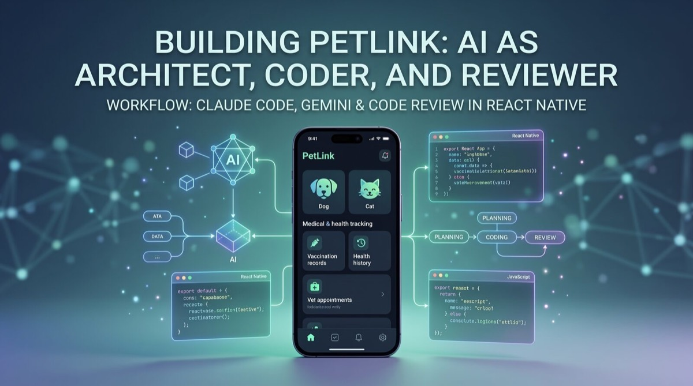

Kako sam gradio PetLink: dva AI modela koji pišu i pregledaju kod jedan drugome
Priča o razvoju PetLink-a, all-in-one aplikacije za vlasnike kućnih ljubimaca: ideja i provjera su moje, a Gemini i Claude su generisali kod i pregledali ga jedan drugome.
Ideja za PetLink je počela od jedne dosadno obične scene: kartice za vakcinaciju koju ti veterinar gurne u ruku, a koja onda završi u fioci. Šest sedmica kasnije prozor za sljedeću vakcinu je prošao, niko to nije primijetio na vrijeme, a vlasnik ljubimca je ponovo upao u isti stari ciklus: panika u ponoć uz 40 kontradiktornih Google rezultata, potraga za nestalim psom preko Facebook objava i flajera, zdravstvena istorija razbacana po papirima, mejlovima i sjećanju. Nijedan od tih alata pojedinačno nije loš. Problem je kognitivno opterećenje držanja svega toga na različitim mjestima, baš u trenucima kad je najmanje vremena za traženje.
Iz te frustracije je nastao PetLink, mobilna all-in-one platforma za vlasnike kućnih ljubimaca, rađena u React Native-u sa Supabase backendom: elektronski zdravstveni karton, alert za nestale ljubimce sa mapom u realnom vremenu, Love Match za parenje, AI čet koji radi na DeepSeek modelu istreniranom za brigu o ljubimcima i uzima u obzir vrstu, rasu, starost i pol ljubimca, planer sa sinhronizacijom sa kalendarom telefona i oglasnik za udomljavanje. Namjerno je to ekosistem, a ne jedna funkcija, baš zato što je ekosisteme teže napustiti kad jednom uđeš u njih.

Ono što je, bar meni, bilo jednako zanimljivo koliko i sam proizvod jeste kako je pravljen: ideja i provjera su ostale na meni, a dva različita AI modela su pisala kod i držala jedan drugog pod kontrolom.
Podjela posla: moja ideja, njihov kod, unakrsni review
Radni tok je bio jednostavan na papiru, a prilično disciplinovan u praksi. Ideja i provjera su moje: šta svaka funkcionalnost treba da radi, kako se uklapa u ostatak aplikacije i da li zaista radi kad se napravi. Kod je generisan uz Gemini i Claude, a svaki od njih je pregledao kod onog drugog prije nego što bi ušao u glavnu granu.
Prije nego što je generisan ikakav kod za neku funkcionalnost, zapisao sam šta ta funkcionalnost tačno znači u kontekstu ostatka aplikacije: gdje živi u navigacionoj strukturi, koje tabele i relacije joj trebaju u Supabase-u, koja stanja ekrana postoje (prazno, učitavanje, greška, puno) i gdje se preklapa sa funkcijama koje već postoje. Za aplikaciju sa šest usko povezanih modula to preklapanje nije kozmetičko pitanje. Zdravstveni karton hrani AI čet kontekstom, planer se oslanja na isti karton za podsjetnike, a mapa za nestale ljubimce dijeli profil ljubimca sa svim ostalim. Kad su te veze jasne unaprijed, kasnije refaktorisanje je mnogo rjeđe.
Sa tim opisom u ruci, Gemini ili Claude je pisao implementaciju: komponente, Supabase upite, navigacionu logiku. Brzina pisanja koda nije bila usko grlo. Usko grlo je bilo da li taj kod zaista radi ono što sam opisao i da li je bezbjedan i konzistentan sa ostatkom baze koda.
Tu je ulazio drugi model, kao recenzent. Kad je Gemini nešto napisao, Claude je to pregledao, i obrnuto. Review prolaz je tipično tražio stvari koje je lako propustiti kad se piše brzo:
- da li Supabase row-level security pravila zaista ograničavaju ko može da čita i mijenja čiji zapis (kritično kad zdravstveni podaci ljubimca treba da budu vidljivi samo vlasniku),
- da li su stanja greške i praznog ekrana zaista pokrivena ili samo happy path,
- da li je neka nova komponenta tiho duplirala logiku koja već postoji u drugom dijelu aplikacije,
- da li su tipovi i oblici podataka konzistentni između ekrana koji dijele isti profil ljubimca.
Ništa od ovoga nije dramatično pojedinačno. Ali u aplikaciji sa šest modula koji dijele podatke, baš ta vrsta sitnih nekonzistentnosti je ono što se najsporije otkriva ručnim testiranjem, a najbrže na review-u koji gleda cijeli kontekst odjednom. Poslije review-a, posljednja provjera je bila moja: pokretanje funkcionalnosti na pravom uređaju i testiranje u odnosu na ono što sam zapisao na početku.
Zašto unakrsni review između dva modela
Prirodno pitanje je zašto ne pustiti jedan model da piše i sam pregleda svoj kod. Razlog je praktičan, ne ideološki. Review koji radi neko (ili nešto) ko nije napisao taj kod je iskreniji. Lakše je primijetiti problem u tuđem rješenju nego u sopstvenom. To važi za ljude, a ispostavilo se da slično važi i za dva različita modela. Nijedan nije branio odluke koje je sam donio tokom pisanja. Svaki je gledao opis i stvarni kod, i upoređivao ih.
Dva različita modela takođe prave različite greške. Jedan bi propustio edge case u sinhronizaciji kalendara, drugi bi propustio labavo sigurnosno pravilo. To što su provjeravali jedan drugog uhvatilo je više takvih slijepih mrlja nego što bi uhvatio bilo koji od njih pregledajući sam sebe.
Gdje se ovaj pristup lomi
Ovo nije bio proces bez trenja, i vrijedi biti iskren oko toga gdje nije savršen. Review je onoliko dobar koliko je dobar opis koji mu je dat. Ako je moj opis neke funkcionalnosti bio nejasan ili nepotpun, review protiv njega nije mogao da uhvati da je sam opis pogrešan, samo da li je kod vjeran opisu.
AI alati takođe mogu djelovati sigurno dok griješe. I Gemini i Claude povremeno predlažu rješenje koje zvuči uvjerljivo, a ne drži vodu u konkretnom edge case-u, na primjer u logici oko sinhronizacije kalendara ili u obradi stanja kad korisnik nema internet konekciju. Ponekad se i model koji radi review složio sa greškom. Ništa od toga ne zamjenjuje ručno testiranje na pravom uređaju, niti zamjenjuje odluku da li je neka funkcionalnost uopšte vrijedna truda da se gradi. To je pitanje za proizvod, ne za alat koji piše kod.
I možda najvažnije: ovaj radni tok ubrzava kako brzo ideja postaje radni kod, ali ne odgovara na pitanje da li ljudi tu ideju zapravo žele. Baš zato je sljedeća faza za PetLink namjerno spora i mala: plan validacije od 8 do 10 sedmica sa 50 do 100 pravih korisnika, gdje je jedina metrika koja se posmatra sedmična retencija na dan 30. Ako pređe 20% i bar jedan segment pokaže volju da plati, ide se dalje na punu izgradnju. Ako ne, uči se iz toga i prilagođava. Kodna baza i naučene lekcije ostaju, bez obzira na ishod.
Šta bih prenio nekom ko pravi slično
Ako gradiš nešto slično, aplikaciju sa više povezanih modula koji dijele podatke, nekoliko stvari iz ovog iskustva vrijedi probati odmah:
- Zapiši šta funkcionalnost treba da radi prije nego što se generiše ikakav kod, čak i kad radiš sam. Ne mora da bude dugačak dokument. Dovoljno je da eksplicitno kaže šta nova funkcionalnost dira u ostatku sistema.
- Neka kod pregleda drugi model, i neka gleda tvoj opis i kod jedan pored drugog, a ne samo da li kod radi. Pitanje nije samo "da li se ovo pokreće bez greške", nego "da li je ovo konzistentno sa ostatkom aplikacije i da li su edge case-ovi pokriveni".
- Posebno obrati pažnju na sigurnosna pravila kad više modula dijeli iste podatke. Tip bugova koji najviše boli (ko može da vidi čiji zdravstveni karton) je baš onaj koji se najlakše previdi kad se žuri sa isporukom funkcije.
- Posljednju provjeru zadrži za sebe. AI može da piše i pregleda kod, ali testiranje na pravom uređaju i odluka kad je nešto gotovo ostaju na tebi.
- Drži jasnu granicu između brzine isporuke koda i dokaza da proizvod vrijedi graditi. Brža izrada ne znači da je ideja validirana. To je zaseban proces, sa sopstvenom metrikom i sopstvenim rokom.
PetLink je sada dostupan na Google Play-u. O tome šta aplikacija radi i kako sam je testirao pisao sam u članku PetLink: aplikacija za brigu o ljubimcima koju sam napravio i testirao od početka do kraja.